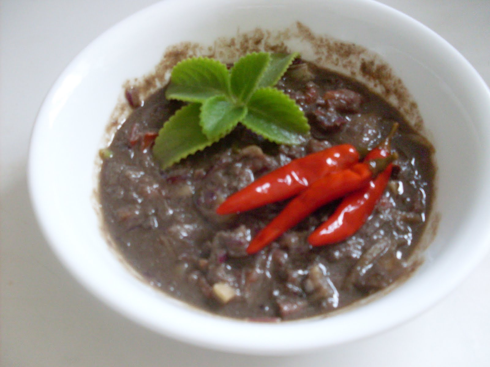

Ginamos
Ingredients
- Small fish (anchovy-like)
- Salt
- Water
Instructions
- Clean small fish and drain.
- Mix fish with generous salt in a jar.
- Cover and let ferment for 5–7 days.
- Stir occasionally to ensure even fermentation.
- Serve as condiment with rice or vegetables.
History
Ginamos is a fermented fish paste, a staple condiment of the Matigsalug tribe, valued for preservation.